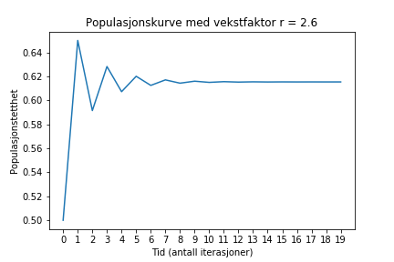
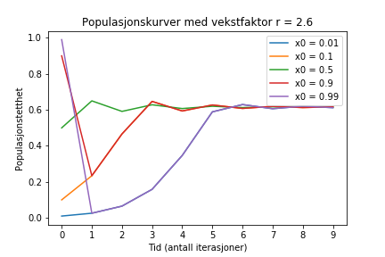

Økter
Innhold
- Uke 6: Nøsen
- Uke 5: Videre med prosjektarbeid
- Uke 4: Videre med prosjektarbeid
- Uke 3: Overgang til prosjektbasert arbeid
- Statuslevering på terminprosjekt og to øvrige leveringer
- Videre med terminprosjekt og klassetursinformasjon
- Terminprosjekt
- Uke 44: Lesing av og skriving til filer
- Uke 43: Lister og plotting
- Uke 42: Hjemmearbeid med funksjoner
- Uke 41: Introduksjon til funksjoner
- Uke 39: Videre med algoritmer
- Uke 38: Algoritmer
- Uke 37: Løkker
- Uke 36: Forgreining
- Uke 34: Grunnleggende regning
- Kommende
Uke 6: Nøsen
Når
- Avreise Oslo bussterminal tirsdag 4. februar, 8:35.
- Ankomst Oslo bussterminal fredag 7. februar, 14:50.
Hva
Vi skal til Nøsen yoga- og fjellhotell i vakre Valdres. Der skal vi gjennomføre to programmeringsprosjekter, hvorav ett medfører droneflyging, ha daglige yogatimer, samt et matkurs. Det blir tid til å slappe av på egenhånd, og om du ønsker er det mulig å ta seg en langrennstur eller to.
Målet med turen er å bli tryggere med programmering, hvor vi spesielt fokuserer på koblingen mellom modellen og det vi modellerer.
Prosjektalternativ 1
https://www.youtube.com/watch?v=p_di4Zn4wz4
- Dette er en introduksjon til temaet «differensiallikninger», hvor likningen både uttrykker en størrelse (f.eks. posisjon) og ett eller flere nivåer av denne størrelsen endring (f.eks. fart og akselerasjon)
- Videoen avsluttes med en pythonkode som regner ut posisjonen til en pendel etter
tsekunder, hvor dette regnes ut med en rett-fram-stegvis-løsning av en differensiallikning
Oppgave
- Kopier koden i videoen og dobbeltsjekk at du får samme verdier som 3B1B fra din kode som han fikk i sin
- Lagre \(\theta\) og \(\dot{\theta}\) i hver sine lister for en gitt verdi av
t. (For eksempel, start med \(\theta = 179^{\circ}\) og lagre verdiene for \(\theta\) og \(\dot{\theta}\) i hver sine lister.) - Lag et plot hvor du tegner verdiene fra forrige oppgave, tegn \(\dot{\theta}\)-verdiene på \(y\)-aksen og \(\theta\)-verdiene på \(x\)-aksen
- Foreslå hvordan vi kan gå fra forrige oppgave til et fullstendig faseplot à la dem vist i videoen.
Prosjektalternativ 2
https://www.youtube.com/watch?v=ovJcsL7vyrk
- Vi skal utforske en enkel «iterativ» prosess, hvor vi finner neste verdi verdi ved å gjennomføre en prosess med «nåværende» verdi. Vi nummerer verdien med en «subskript», for eksempel betyr \(x_3\), \(x\)-verdi 3.
- Vi skal starte med å se på prosessen Veritasium (herfra «Derek») viser fra rundt 55 s i videoen. Altså at \(x_{n+1} = rx_n(1-x_n)\), hvor \(r\) er en vekstrate og \(x_n\) er populasjonstetthet (altså mellom 0 og 1) etter \(n\) iterasjoner.
- Programmer prosessen fra forrige punkt for en gitt verdi av
rog plot \(x\)-verdiene mot antall iterasjoner, à la det jeg viser i figuren under.

Illustrasjon 1 Et eksempelplot for startverdi \(x_0 = 0.5\)
- Koden som lager plottet over består av følgende struktur:
sett r = 2.6
sett startx = 0.5
sett xs til en tom liste
sett its til å være en liste med heltallene fra 0 til og med 19
Gjenta til xs og its er like lange:
legg x til xs
oppdater x til å være r * x * (1 - x)
For å plotte kan du bruke linjene under, dersom du har brukt variabelnavnene jeg har over.
fig, ax = plt.subplots() ax.plot(its, xs) ax.set_title(f"Populasjonskurve med vekstfaktor r = {r}") ax.set_xticks(its) ax.set_xlabel("Tid (antall iterasjoner)") ax.set_ylabel("Populasjonstetthet") fig.savefig('figurer/bifurcation0.png')
Oppgave videre
Hva kan vi gjøre videre med dette? Vel, legg merke til at i grafen over nærmer populasjonstettheten seg en bestemt verdi. Vi kan anta at etter et antall iterasjoner (la oss si, 200) har nådd denne endelige populasjonsverdien. Dette vil da være verdien som ligger til slutt i populasjonslista vår, xs.
print(f"Med startverdi {xs[0]:.2f} og r = {r} får vi en endelig populasjonstetthet {xs[-1]:.2f}.")
Med startverdi 0.50 og r = 2.6 får vi en endelig populasjonstetthet 0.62.
Dette kan få oss til å stille minst to spørmsmål:
- Er den endelige populasjonstettheten avhengig av hvilken startverdi vi velger?
- Er den endelige populasjonstettheten avhengig av hvilken vekstrate vi velger?
En start på å svare på 1)
import matplotlib.pyplot as plt r = 2.6 # rate of growth x0s = [0.01, 0.1, 0.5, 0.9, 0.99] # initial population densities xss = [[x0] for x0 in x0s] # list of sublists, each containing the popdens from one x0 NUM = 10 # number of years to run simulation for its = list(range(NUM + 1)) # This is a list of [0, 1, 2, ..., 19] for _ in its[1:]: # notice that we skip its[0], since we've already put x0 in the lists for xs in xss: # this is our prior simulation, now to be run for each x0 x = xs[-1] # x is the last value in the current list x = r * x * (1 - x) # calculate the popden for the current x0 xs.append(x) # append the calculated value to the current xs list fig, ax = plt.subplots() for xs in xss: # create a separate plot (i.e. graph or line) for each xs list ax.plot(its, xs) # There will be one set of x and y axes, ax.set_title(f"Populasjonskurver med vekstfaktor r = {r}") ax.set_xlabel("Tid (antall iterasjoner)") ax.set_ylabel("Populasjonstetthet") # To set the legends, we need a list of strings, each string the name of one line # make sure that len(legends) == len(xss), so that each xs list has its own name legends = [f"x0 = {x0}" for x0 in x0s] # preparing the legends for the plots ax.legend(legends) fig.savefig('figurer/bifurcation1.png')

Illustrasjon 2 Utforskning av hvorvidt startverdi påvirker endelig populasjonstetthet
Kontakt
Jeg (Tarjei Bærland) kan til en hver tid nås på telefonnummer 930 98 504.
Pakkeliste
- undertøy til fire dager
- superundertøy
- dress til å stå ute i
- tøy til å slappe av i på kvelden
- treningstøy til yoga
- DATAMASKIN MED LADER
- toalettsaker
- vinterstøvler
- brettspill
- lesestoff
- sengetøy
Annet
Uke 5: Videre med prosjektarbeid
Beskjeder:
- Bruk av microbit istedenfor arduino
Til neste gang: Se over følgende tre videoer. Spesielt den siste, som går på numerisk integrasjon, forventer jeg at er krevende for de som ikke har R2 nå. Det er helt i orden at en tilbakemelding fra dette er «du, Tarjei, det der blei helt håpløst, jeg hadde ikke sjans til å få til noen ting og jeg husker ikke hva et areal er».
Ting jeg ønsker tilbakemelding på:
- Er lyd- og bildekvalitet ok?
- Kan jeg («du», eleven, altså) også få legge inn VSCode? Det ser topp ut!
- Er dette en ok måte å gå gjennom nytt stoff på? Eller skal vi heller holde på en time eller to hver onsdag?
- TARJEI SLUTT Å PRATE SÅ FORT
Timens utfordring Hva er summen av alle tall under 1000 som har 3 eller 5 (eller begge) som en faktor?
(Oppdatering: Dette dekkes nå også i videoene over.)
Alt1
summen = 0 maks = 1000 tall = 1 while tall < maks: if tall % 3 == 0: summen += tall elif tall % 5 == 0: summen += tall tall += 1 print(f"Svaret er {summen}.")
Svaret er 233168.
summen = 0 maks = 1000 tall = 1 while tall < maks: if tall % 5 == 0 or tall % 3 == 0: summen += tall tall += 1 print(f"Svaret er {summen}.")
Svaret er 233168.
Uke 4: Videre med prosjektarbeid
Beskjeder:
- Skrive hvor man finner eventuell kildekode – flere har nå «magisk» fått seg svært gode programmer
- Sørg for at koden din faktisk ligger i onedrive, hvis ikke får jeg ikke sett
Opplegg:
[X]Introrunde[ ]Kort turtle-intro med sporfinning[ ]Arbeid med prosjekter[ ]Christian demonstrerer teksteventyr
Til neste gang:
[ ]Forslag til hvordan man kan løse Battleships-delen.
from turtle import * from math import sqrt def distance_to_food(): current_pos = pos() return sqrt((current_pos[0] - food[0]) ** 2 + (current_pos[1] - food[1]) ** 2) def smell(): global distance_last_time if distance_to_food() > distance_last_time: result = "weaker" else: result = "stronger" distance_last_time = distance_to_food() return result def find_by_smell(turn): while True: fd(1) if smell() == "weaker": right(turn) def draw_food(): pu() current = pos() setpos(food) stamp() setpos(current) pd() reset() food = (30, -170) draw_food() distance_last_time = distance_to_food() find_by_smell(20)
Uke 3: Overgang til prosjektbasert arbeid
[ ]Gjennomgang av kompetansemål[ ]Opplegget videre
Kompetansemål i faget
Lenke til Udirs sider her.
Les gjennom målene.
Opplegget så langt
- Har ikke tatt nytte av at vi er få elever i klassen.
Opplegget videre
Du velger et prosjekt innenfor et tema du synes er interessant. Du kan selv velge om du vil jobbe med Python eller Arduino, eller noe annet.
Forslag:
Python
- GPS-data fra telefon, finne fart og hastigheter.
Arduino
- fartsmålinger
- akselerasjonsmålinger med akselerometer (holdt av til Nøsen)
- temperaturmålinger i endo- og eksoterme reaksjoner
Begge
- Fysikkbasert spill med Arduino som «håndkontroll»
Krav
- Ukentlig logg i en fil kalt
logg.txt - Fortsatt ukentlige innleveringer, disse er ment til å ta rundt tjue minutter
Statuslevering på terminprosjekt og to øvrige leveringer
Onsdag 18. desember skal du lever tre python programfiler, den ene er en status for prosjektet ditt så langt, de to andre svarer på oppgavene gitt under. I tillegg til dette skal du levere et kort pdf-dokument, som spesifisert under.
OBS! Sørg for å ha dokumentasjonsstrenger til funksjonene dine samt at du har hensiktsmessige kommentarer i koden. Dersom du ikke helt er sikker på hva jeg legger i «hensiktsmessig», få en medeleve til å se over koden din, og kommenterer eventuelle steder denne ikke forstår hvorfor du har gjort som du har gjort.
Et eksempel på en helt ålreit dokumentasjonsstreng ser du under.
def avstand(fart, tid): """Tar inn fart i kilometer i timen og tid i timer og returnerer avstanden i kilometer. Regnet ut ved å bruke at avstand = fart * tid, altså antas det null akselerasjon. """ return fart * tid
Statuslevering for terminprosjekt
Lever en python-fil hvor du har eller i det minste har forsøkt å implementere følgende:
- en funksjon som regner fra en ekkotid til tilhørende avstandsberegning, den skal altså ta inn et tall i mikrosekunder, og returnere avstanden til gjenstanden i meter.
- en utregning av fart basert på framoverdifferanse, hvor du altså bruker at farten til en gjenstand er den tidsderiverte av posisjonen. (Altså at en gjenstands fart er hvor mye posisjonen endrer seg per tid.)
I tillegg leverer du en pdf-fil (denne kan du skrive i word, men det er essensielt at du lagrer som pdf) hvor du legger fram plot du har laget av posisjonen og farten til gjenstanden. Koden du har brukt for å generere plottene bør komme fram i python-fila nevnt over.
Frivillig format
Har du et program du er spesielt fornøyd med i år, og ønsker at jeg tar med i kommenteringen for terminkarakteren? Da kan du levere med dette. Hvis ikke, lag et pythonprogram hvor du gjør følgende, og legg heller med det.
- be brukeren om et tall og to ord
- skriv ut til brukeren hvorvidt summen av vokalene i de to ordene er større enn tallet eller ikke.
Eksempel på bruk av programmet kan være som følger:
>>> Gi meg et tall, takk. 8 >>> Gi meg et ord, takk. hei >>> Gi meg et ord til, takk. hvorfor Summen av antall vokaler i ordene 'hei' og 'hvorfor' er 4, dette er mindre enn 8. Hadet!
Tips:
- Implementer noe enklere først, ta kun ett ord, tell kun en type vokal
- Du kan iterere over en tekststreng på samme måte som vi gjør i en liste, se under.
- Du kan sjekke om en bokstav er i et ord ved å bruke
in, se under.
for bokstav in "liten tekst": print(bokstav)
l i t e n t e k s t
tekst = "liten tekst" if 'i' in tekst: print("Bokstaven 'i' er i teksten.")
Bokstaven 'i' er i teksten.
Løsningsforslag: Frivillig format
Under er en video hvor jeg lager et løsningsforslag til oppgaven:
Du finner den resulterende fila her (vokalteller.py).
Foreslåtte videre oppgaver
- Basis
- Kortoppgaver
- Funksjoner
- Kortoppgaver
- Lister og løkker
- Oppgaver
Videre med terminprosjekt og klassetursinformasjon
Klassetur
Vi har vært så heldige å få innvilget en klassetur til programmingsklassen. Det ser ut til at opplegget blir noe à la følgende:
Sted
Nøsen yoga i Valdres.
Når
Tirsdag 4. februar til fredag 7. februar 2020.
Hva?
Vi skal jobbe med programmeringsprosjekter som er spesielt egnet i fjellheimen. Dere vil få individuelle prosjekter, delvis tilpasset interesser, helvis tilpasset sted og tidspress. Dersom dere har spesifikke ønsker, kom med dem så snart som mulig.
Videre kommer det til å være daglige yogaøkter og muligens noen andre aktiviteter. Det blir også tid til å slappe av og nyte fjellheimen.
Hva trenger jeg av dere?
En e-post til tabaa004@osloskolen.no i løpet av tirsdag 3. desember dersom dere ikke har mulighet til å være med.
Jeg godtar også korte beskjeder av typen, «Flott, jeg gleder meg!». Det gjør jeg, i det minste, gleder meg.
Fravær på onsdag
Jeg skal på strategiseminar på onsdag, så terminprosjektet dere nå jobber med blir egenarbeid på torsdag. Jeg legger ut videre oppgaver og veiledninger i løpet av tirsdag. Jeg legger også ut eksempelkode som får dere up to scratch til dit vi kom forrige uke.
Avslutter med å minne om at for mange av dere nærmer dere dere nå et halvt års erfaring med noe som er konseptuelt svært krevende, programmering. Vær så snill ikke å bli stressa om faget fremdeles virker svært vanskelig og uoversiktelig. Etter som vi framover vil bruke byggeklossene vi til nå har hatt til flere og flere ulike problemer, vil eventuelle knuter løsne i tid til sommeren – stol på meg.
Terminprosjekt
Dette prosjektet jobber vi med fram til jul, og kommer til å være hovedgrunnlaget for terminkarakteren din.
Installere bibliotek
- Last ned arduino_serial.py, og legg denne i arbeidsmappa di.
- Koble til en arduino med
Triggersatt til pin 13,Echotil pin 11,Gndtil gnd ogVcctil 5 V. - Kjør det minimale eksempelet under og sjekk at eksempelplot blir laget.
Minimalt eksempel
from arduino_serial import collect_data import matplotlib.pyplot as plt tider, ekkotider = collect_data(runtime=5000, delay=2000, comport="COM4") fig, ax = plt.subplots() graf, = ax.plot(tider, ekkotider) ax.legend([graf], ["Ekkotider"]) ax.set_xlabel("Eksperimenttid (ms)") ax.set_ylabel("Måletid (μs)") fig.savefig('eksempelplot.png')
Her skal vi ha laget oss et
Nødvendig utstyr
- Et Arduino-kort
- Ultralydssensor
- Ledninger
Skisse av prosjektoppgave
Du skal utforske numerisk derivasjon (ved for eksempel framoverdifferanse) basert på dataene du får fra Arduino-loggeren.
Del 1 – En omregning av ekkotid
Lag en funksjon (for eksempel ekko_til_avstand) som tar inn et tall (ekkotiden) og returerer tilsvarende avstand i meter. Du kan bruke at lydfarten i luft er 340 m/s.
Du kan teste funksjonen din med å sjekke at du får en avstand på 0.51 m om du regner med en ekkotid på 3000 μs.
Del 2 – Plotting av avstand
Fra eksempelet over har vi fått en liste med ekkotider, kalt ekkotider. Det vi ønsker å gjøre er å bruke funksjonen ekko_til_avstand på hver ekkotid i lista ekkotider.
Dersom vi ønsker å bruke en funksjon på hvert element i en liste, kan det gjøres som foreslått under.
import math def f(x): return 2 * x tall = [1, 2, 5, -5, 18, 17.3, math.pi] dobbelttall = [] for t in tall: dobbelttall.append( f(t) ) print(dobbelttall)
[2, 4, 10, -10, 36, 34.6, 6.283185307179586]
Gjør tilsvarende, men med ekkotider, avstander og ekko_til_avstand.
Du skal så lage en graf hvor du har den nye avstander-lista di som y-verdier og tider (merk, ikke ekkotider) på x-aksen. Du ønsker altså en graf hvor du viser posisjonen til gjenstanden foran sensoren avhengig av tid ut i målingene.
Del 3 – Utforskning av sensorens grenser
Før vi kan begynne å bruke sensoren til å ta ordentlige målinger, må vi finne ut av hvorvidt den er til å stole på eller ei. Du skal nå forsøke å gjøre et forsøk for å kartlegge dette. Merk deg at det kan være avvik mellom de uike sensorene, så du kan gjerne samarbeide med noen, men må gjøre dine egne målinger.
- Du gjør rundt ti målinger.
- Du bruker kjente avstander, fra rundt ti centimeter til rundt to meter.
- Du varierer vinkelen ut fra sensoren
- Gjør en fullstendig gjennomkjøring for hvert målepunkt, men du kan bruke kort måletid. For eksempel vil det holde med
collect_data(runtime=1500)for kun å ta målinger i halvannet sekund - Tegn opphvordan sensorens målte verdier samsvarer med virkelige verdier (dette kan du gjøre for hånd)
Lykke til!
Del 4 – Fra posisjon til fart, fra fart til aksellerasjon
Foreslåtte tillegg
- Lage boks med 3D-printer eller laserkutter
- Gjøre målestasjonen trådløs
- Gjøre andre målinger
- Sanntidsvisualisering i Pygame
Levering
Uke 44: Lesing av og skriving til filer
Innleveringsoppgaver uke 44 pdf
Innlesing av eksempelfil
Les inn eksempelfila og lagre verdiene i to lister, tverdier og sverdier.
Plotting av eksempelfil
Plot verdiene fra fila, kall første-aksen for \(t (s)\) og andreaksen for \(s (m)\).
Derivasjon av eksempelfil
Bruk framoverdifferanse på verdiene fra de foregående oppgavene til å finne en ny liste \(vverdier\), merk at denne kommer til å bli ett element kortere enn de to foregående listene.
Plot også disse verdiene, gjerne i samme koordinatsystem.
Uke 43: Lister og plotting
Innleveringsoppgaver
Et enkelt, dobbelt plot
Velg to funksjoner og plot de innenfor de samme x-verdiene.
Lever fila som f"uke43_{fornavn}_dobbelplot.py og den resulterende grafen som f"uke43_{fornavn}_dobbelplot.png.
Starten på utforsking av framoverdifferansen
Velg én av funksjonene fra forrige oppgave, denne skal du nå gjøre følgende med:
- Finn funksjonens deriverte analytisk, og opprett denne som en egen funksjon
- Lag et plot som sammenligner den analytiske løsningen med den numeriske tilnærmingen du finner ved å bruke framoverdifferanse-metoden fra sist uke.
Et eksempel på plotting
Om du har tre lister med verdier som skal plottes, en med x-verdier og to med y-verdier, kan du bruke en fremgangsmåte à la følgende for å få til dette.
Inntil videre kan du bruke den følgende fremgangsmåten ukritisk. Bruk hjelpesystemet aktivt om du ønsker å finne andre ting du kan endre med plottene dine, tilstreb ikke å google problemer du eventuelt støter på.
import matplotlib.pyplot as plt def f(x): return x ** 2 - 5 def g(x): return x ** 3 + 13 # Vi lager oss en liste [-10, -9, ..., 0, ... 9, 10] x_verdier = list(range(-10, 11)) # Vi oppretter tomme lister som skal holde y-verdiene våre y_verdier1 = [] y_verdier2 = [] # Vi legger funksjonsverdiene til y-verdilistene for x in x_verdier: y_verdier1.append(f(x)) y_verdier2.append(g(x)) # Vi oppretter et tomt plot fig, ax = plt.subplots() # Vi lager oss to linjer, en for hver liste av y-verdier. Legg merke til kommaet linje1, = ax.plot(x_verdier, y_verdier1) linje2, = ax.plot(x_verdier, y_verdier2) ax.set_xlabel('x-verdier') ax.set_ylabel('y-verdier') ax.set_xlim(-14, 14) ax.set_ylim(-500, 600) # Vi setter navn på linjene våre ax.legend([linje1, linje2], ['f(x)', 'g(x)']) fig.savefig('eksempelplot.png') fig.show()
Som produserer følgende plot:

Illustrasjon 3 Et enkelt, dobbelt plot
Uke 42: Hjemmearbeid med funksjoner
Innleveringsoppgaver
Introduksjon
Framover, dersom jeg ber deg om å «lage en funksjon absolutt_differanse som tar to paramaterer og returnerer absoluttverdien av de to parameternes differanse», kan det formelt oversettes til følgende pythonkode:
def absolutt_differanse(ledd1, ledd2): """Returnererer absoluttverdien til differanse mellom 'ledd1' og 'ledd2'.""" diff = ledd1 - ledd2 return abs(diff)
Etter at du har kjørt programmet, kan du sjekke at funksjonen er opprettet ved å skrive help(absolutt_differanse) i konsollen. Du skal da få ut noe à la følgende:
Help on function absolutt_differanse in module __main__: absolutt_differanse(ledd1, ledd2) Returnererer absoluttverdien til differanse mellom 'ledd1' og 'ledd2'.
Videre kommer jeg til å gi tester funksjonen skal bestå, eksempelvis som i tabellen under.
ledd1 |
ledd2 |
absolutt_differanse(ledd1, ledd2) |
|---|---|---|
| 1 | 1 | 0 |
| -5 | 15 | 20 |
| 15 | -5 | 20 |
| -15 | -5 | 10 |
| 0 | -5 | 5 |
Du kan da teste funksjonen din ved å kontrollere at den returnerer riktige verdier, ved for eksempel å skrive i konsollen absolutt_differanse(-5, 15) for å se at det evaluerer til verdien 20.
Matematiske funksjoner
Som andre navn i python, tilstreber vi at også funksjonsnavnene er så beskrivende som mulig. Bokstaver er billige, og du har lettere for å forstå hva funksjonen kvadratrot gjør, enn frt.
Unntaket til dette er når vi definere enkle matematiske funksjoner, som \(f(x) = 3x^2\cdot\lg x - 15\). Vi ville altså fått:
import math def f(x): return 3 * x ** 2 * math.log10(x) - 15
(Her har jeg også droppet å ta med en dokumentasjonsstreng.)
Bruk funksjonen over og lag et program som skriver ut ti \(x\)- og tilhørende \(f(x)\)-verdier for funksjonen over.
For \(x\)-verdiene fra og med 20, til og med 29, får vi altså følgende utskrift:
x -- f(x) ----------------------- 20 -- 1546.2 21 -- 1734.3 22 -- 1934.2 23 -- 2146.1 24 -- 2370.0 25 -- 2606.1 26 -- 2854.6 27 -- 3115.4 28 -- 3388.7 29 -- 3674.6
Kall fila f"uke42_{fornavn}_matfunk.py" (altså, uke41_trond_matfunk.py, om du er så heldig å hete Trond).
Typer og funksjonstyper
Vi har tidligere snakket om at ulike verdier har ulike type. For eksempel er 3 av typen int, altså et heltall eller «integer». Vi skal nå se på litt flere typer, blant annet funksjoner.
Skriv av det følgende pythonprogrammet og fyll ut det som står de doble likhetstegnene, lever fila som f"uke42_{fornavn}_typer.py.
def utregning(x): """Tar inn et tall x, og gjør litt matte.""" dobbel_x = 2 * x litt_mindre = dobbel_x - 5 return litt_mindre * dobbel_x def er_stort(testtall, stort_tall): """Tar inn to tall og returnerer hvorvidt 'testtall' er større enn 'stort_tall'. """ returverdi = False if testtall > stort_tall: returverdi = True return returverdi # I alle linjene under, fyll ut det som står i anførselstegn # når du skriver venstre side inn i konsollen. # Eksempel: # type(3.1) == 'float' # siden # >>> type(3.1) # <class 'float'> # Oppgaver: # type(3) == # type(2 + 2) == # type(utregning(5)) == svar = utregning(5) # type(svar) == # type(er_stort(3, 2)) == # type(er_stort(2, 3)) == # type(er_stort) ==
Derivering av funksjoner
Fra matematikken er vi vant til å innføre den deriverte via dens definisjon.
Den derivert til funksjonen \(f(x)\) ved punktet \(x=a\) finner vi som \[f(x) = \lim_{\Delta x \to 0}\frac{f(x+\Delta x) - f(x)}{\Delta x}\]
Vi skal nå bruke denne definisjonen til å regne ut den deriverte for en matematisk funksjon, \(f(x) = 3x^2 \cdot \lg x - 15\).
Om jeg ønsker å finne verdien til den deriverte av denne funksjonen i, for eksempel, \(x = 4\), kan vi finne et bedre og bedre overslag for dette ved å bruke mindre og mindre verdier for \(\Delta x\).
import math def f(x): return 3 * x ** 2 * math.log10(x) - 15 delta_x = 0.001 # velger en veldig liten verdi for delta x eval_x = 4 delta_f = f(eval_x + delta_x) - f(eval_x) derivert = delta_f / delta_x print(f"Den deriverte av funksjonen ved x = {eval_x} er omtrent {derivert:.2f}.")
Den deriverte av funksjonen ved x = 4 er omtrent 19.66.
Denne måten å regne ut en derivert på kalles en framoverdifferanse, siden vi finner den deriverte i \(x\) ved å legge til \(\Delta x\).
Utvid tabellen fra forrige oppgave til også å ha en kolonne for den deriverte av funksjonen ved de ulike \(x\)-verdiene. Bruk framoverdifferanse for å finne den deriverte. Lever fila som f"uke42_{fornavn}_framoverdiff.py.
x -- f(x) -- f'(x) ------------------------------------- 20 -- 1546.2 -- 182.19 21 -- 1734.3 -- 193.97 22 -- 1934.2 -- 205.87 23 -- 2146.1 -- 217.89 24 -- 2370.0 -- 230.03 25 -- 2606.1 -- 242.27 26 -- 2854.6 -- 254.62 27 -- 3115.4 -- 267.07 28 -- 3388.7 -- 279.61 29 -- 3674.6 -- 292.25
Utfordring: Derivasjonsfunksjon
Lag en funksjon med følgende spesifikasjon:
def derivert_av_funk_ved_x(funksjon, x): """Returnerer den numeriske verdien av den deriverte av funksjonen 'funksjon' når x er 'x'. Bruk en 'framoverdifferanse' (se forrige oppgave) med 'delta_x = 0.0001'. Eksempel: def f(x): return x ** 2 >>> derivert_av_funk_ved_x(f, 2) => 4.0001000000078335 """ # Her gjør du utregningene dine
Merk, her sender vi navnet til en funksjon inn som en parameter til funksjonen.
Lag en funksjon som tar inn navnet på en funksjon og en \(x\)-verdi. Returner et overslag for den deriverte til funksjonen ved denne \(x\)-verdien ved hjelp av framoverdifferanse med en \(Delta x = 0.0001\). Lever fila som f"uke42_{fornavn}_framoverdiffunk.py.
Uke 41: Introduksjon til funksjoner
[X]Abstraksjon som et alternativ til kodenivå[X]Hvordan lage («definere») en funksjon i Python[X]Hvordan bruke («kalle») en funksjon i Python
Uke 39: Videre med algoritmer
[X]Repetisjon fra sist[ ]En tilnærming til likningsløsning
Repetisjonsoppgaver
Ved siden av å gå gjennom de tidligere innleveringsoppgavene, kan du sjekke om du er ajour med faget ved å prøve deg på følgende oppgaver. Om du ønsker besvarelsen din kommentert, kan du levere den filvis som angitt i slutten av hver del.
Enkel regning og konsollen
Bruk konsollen til å regne ut følgende:
- \(3^2 - 15 + \frac{1}{4}\)
- Resten av delestykket \(\frac{11233212332}{43434}\)
- Lag en variabel
a, gi den verdien 5, og sjekk om den er større enn 3. - Sjekk om variabelen
aer delelig på 2 eller om den er større enn 2.
Fasit:
- \(-5,75\)
- \(7214\)
TrueTrue
input og printing
Skriv et program der du ber brukeren om to heltall. Bruk ulike regneoperasjoner og skriv svarene tilbake til brukeren. For eksempel:
# Be brukeren om tallene tall1 og tall2 her # husk å endre til heltall prod = tall1 * tall2 print(f"Produktet av {tall1} og {tall2} er {prod}.")
Filnavn uke39_rep_inputprint_fornavn.py.
Forgreining
Skriv et program som ber brukeren om to heltall, skriv tilbake hvilket tall som er størst og hvilket som er minst.
Filnavn uke39_rep_forgreining_fornavn.py.
Løkker
Skriv et program som ber brukeren om et tall, og som deretter teller fra 0 opp til tallet brukeren har tastet inn.
Utvid programmet til å hoppe over alle tallene som er i 7-gangeren.
Filnavn uke39_rep_loekker.py.
Innleveringsoppgaver
Skriv et program som bruker halveringsmetoden til å løse en selvvalgt likning. Pass på å skrive i dokumentasjonen hva programmet skal løse. Starten på et eksempel kan se ut som følger:
# Dette programmet bruker halveringsmetoden til å løse likningen # # x**5 - 3*x**2 = 15, som altså kan omformes til # x**5 - 3*x**2 - 15 = 0 # # Det er skrevet av Tarjei, 25. september 2019. # Velger en startverdi for løsningen som forsikrer at venstre # side er _negativ_ x0 = 0 # Velger en startverdi for løsningen som forsikrer at venstre # side er _positiv_ x1 = 10 # Velger en godkjent 'feil', altså hvor nøyaktig jeg mener svaret må være. epsilon = 1E-7 while abs(x1-x0) > epsilon: m = (x1 + x0)/2 # Her gjør du utregningene dine. print(f"Løsningen av likningen er {m}".)
Lever oppgaven som uke39_fornavn.py.
Alternative innleveringsoppgaver
Vi kan bruke en while-løkke til å løse en generell likning via halveringsmetoden. Om du ikke husker hvordan dette gjøres, se på de andre oppgavene først.
Du skal lage et program hvor du bruker halveringsmetoden til å gjøre følgende:
- Regne ut vilkårlige røtter for vilkårlige tall, altså \(\sqrt[b]{a}\).
- Regne ut tierlogaritmen for et vilkårlig tall, altså \(\lg{a}\).
- Regne ut den naturlige logaritmen for et vilkårlig tall, altså \(\ln{a}\).
- Regne ut en vilkårlig logaritme for et vilkårlig tall, altså \(\log_b{a}\).
Uke 38: Algoritmer
[X]Repetisjon fra sist[ ]Funksjoner uten «bieffekter»[ ]Funksjoner som enkelt repeterbare kodeblokker[ ]Lister[ ]Et første plot med lister
Tillegg fra undervisningen
Det blei mye knoting rundt kvadrotutregningene denne økta. Her er en gjennomgang gjennomgang av det jeg ønsket å få ut av den initielle delen.
Dette er for øvrig en algoritme for utregning av kvadratrøtter som kalles babylonsk tilnærming, og den første kjente nedtegnelsen er fra år 60 evt.
Wikipedia for de spesielt interesserte.
Motivasjon
I en datamaskin er det en del regning som gjøres direkte på maskinvaren. I moderne maskiner er det for eksempel egne kretser som regner ut summen av to tall eller produktet av to tall. Det er dog et utall regneoperasjoner maskinen må kjøre flere ganger gjennom ulike kretser for å komme fram til. Si vi for eksempel ønsker å finne \(\sqrt{13}\), eller \(\sqrt[3]{13}\), eller generelt \(\sqrt[48]{13}\), her må maskinen gjøre en serie med operasjoner, den må følge en algoritme, for å finne svaret.
Enkelt implementert i Python
Vi er heldige, vi skriver ikke koden direkte til maskinen, vi skriver koden i python som så oversettes via en del trinn til kode som kjøres på maskinen. Dette forenkler ting voldsomt. Om vi ønsker å finne løsningene over, er ikke det værre enn å gjøre noe à la følgende:
from math import sqrt kvadratrot = sqrt(13) tredjerot = 13 ** (1 / 3) foertiaattenderot = 13 ** (1 / 48) print(f"Kvadratroten av 13 er {kvadratrot}.") print(f"Tredjeroten av 13 er {tredjerot}.") print(f"48.-roten av 13 er {foertiaattenderot}.")
Kvadratroten av 13 er 3.605551275463989. Tredjeroten av 13 er 2.3513346877207573. 48.-roten av 13 er 1.0548899460507581.
Hva skal vi gjøre om vi kun kan opphøye i heltall?
En vanskeligere implementasjon i Python
Om vi skal finne \(\sqrt{S}\), kan vi tenke oss at det vi skal finne er løsningen på likninga \[S = x^2.\] Vi lar fremgangsmåten vår være som følger:
- Gjør en gjetning for \(x_0\) (\(0\) markerer at dette er utgangspunktet, vi setter her \(x_0 = 1\))
- Sjekk om nåværende gjetning er tilstrekkelig nærme løsningen ved å regne ut \(x_n^2\) og sammenligne dette med \(S\), hvor \(x_n\) er nåværende gjetning.
- Hvis \(x_n\) var tilstrekkelig nærme, du er ferdig; hvis ikke, oppdater til \(x_{n+1}\) ved å bruke \(x_{n+1} = \frac{x_n + \frac{S}{x_n}}{2}\).
- Gå tilbake til punkt 2.
Punkt 2 til punkt 4 dekker vi i Python ved å bruke en while-løkke, hvor testen i løkka er hvorvidt gjetningen nå er «tilstrekkelig nære». Hva skal vi sette til å være «tilstrekkelig nære»? Vel … det er helt opp til deg. Dersom vi lar forskjellen mellom \(x_n^2\) og \(S\) være «feilen» i gjetningen vår, kan vi si at vi kjører algoritmen til denne feilen har blitt liten nok. Vi bryr oss ikke om feilen er positiv eller negativ, vi er kun interessert i hvor stor den er.
Om vi skriver inn hele dette programmet i python, kan det se ut som følger:
S = 13 # verdien vi skal finne kvadratroten av x = 1 # vår initielle gjetning på løsningen epsilon = 0.00001 # hva vi godkjenner som "nære nok" i = 0 # bruker denne for å holde orden på antall runder i løkka print(f"Starter med gjetningen {x}.") print("--------------------------------------------------------") while abs(S - x**2) > epsilon: # Her sjekker vi om nåværende gjetning er nære nok i += 1 # Merker oss at vi går inn i løkka nok en gang x = (x + S/x) / 2 # Denne linja er kommentert i et eget avsnitt under print(f"Runde nr. {i} gjennom løkka.") print(f"Nåværende gjetning er {x}, etter oppdatering.") print(f"Dette er egentlig kvadratroten av {x**2}.") print(f"Feilen vår er dermed nå {abs(S - x**2)}.") print("--------------------------------------------------------") # Vi har nå kommet oss ut av while-løkka # altså må gjetningen ha blitt god nok print(f"Kvadratroten av {S} er {x}.") print(f"Vi har da fått en feil på {abs(S - x**2)}.") print(f"Vi var gjennom løkka {i} ganger.")
Starter med gjetningen 1.
Runde nr. 1 gjennom løkka. Nåværende gjetning er 7.0, etter oppdatering. Dette er egentlig kvadratroten av 49.0. Feilen vår er dermed nå 36.0.
Runde nr. 2 gjennom løkka. Nåværende gjetning er 4.428571428571429, etter oppdatering. Dette er egentlig kvadratroten av 19.612244897959187. Feilen vår er dermed nå 6.612244897959187.
Runde nr. 3 gjennom løkka. Nåværende gjetning er 3.6820276497695854, etter oppdatering. Dette er egentlig kvadratroten av 13.557327613667736. Feilen vår er dermed nå 0.5573276136677361.
Runde nr. 4 gjennom løkka. Nåværende gjetning er 3.6063454894655185, etter oppdatering. Dette er egentlig kvadratroten av 13.00572778938829. Feilen vår er dermed nå 0.005727789388290105.
Runde nr. 5 gjennom løkka. Nåværende gjetning er 3.6055513629176015, etter oppdatering. Dette er egentlig kvadratroten av 13.000000630636974. Feilen vår er dermed nå 6.306369737529849e-07.
Kvadratroten av 13 er 3.6055513629176015. Vi har da fått en feil på 6.306369737529849e-07. Vi var gjennom løkka 5 ganger.
Legg merke til at det aller meste av koden her går til å skrive ut informasjon til brukeren.
Hvorfor fungerer oppdateringen?
Når vi oppdaterer med \[x_{n+1} = \frac{x_n + \frac{S}{x_n}}{2},\] altså at den oppdaterte gjetningen \(x_{n+1}\) er gjennomsnittet av \(x_n\) og \(\frac{S}{x_n}\) bruker vi følgende argumentasjon:
- Dersom \(x_n\) er en for lav gjetning, altså at \(x_n^2 < S\), vil \(\frac{S}{x_n}\) være en for høy gjetning. Altså er løsningen et sted mellom de to.
- Dersom \(x_n\) er en for høy gjetning, altså at \(x_n^2 > S\), vil \(\frac{S}{x_n}\) være en for lav gjetning. Altså er løsningen et sted mellom de to.
Vi kan dermed komme oss nærmere en faktisk løsning ved å teste ut gjennomsnittet av de to.
Innleveringsoppgaver
Ved å bruke designmønsteret fra kvadratrotutregningene lag et program som gjør følgende:
- Ber brukeren om to heltall
- Regner ut produktet av de to tallene
- Regner ut kvotienten til de to tallene (det første delt på det andre, hvor du bruker heltallsdivisjon)
- Regner ut resten til divisjonen av det første delt på det andre tallet
Her må du tenke etter hvilken test du ønsker å bruke.
Av regneoperasjoner, får du kun bruke addisjon og subtraksjon.
Uke 37: Løkker
Innleveringsoppgaver uke 37
Collatz' formodning
Lag et program som ber brukeren om et tall, og som skriver ut tallene som følger fra dette tallet fra Collatz' formodning.
Collatz' formodning
Hvis \(n\) er et partall, del det på 2. Hvis \(n\) er et oddetall, gang det med 3 og legg til 1.
>>> n = 5 5 16 8 4 2 1
Utfordring
Eksempelet over viser at 5 går innom seks verdier før det lander på 1 (5 16 8 4 2 1). Hvilket tall under 10000 går innom flest verdier før det lander på 1?
Uke 36: Forgreining
[X]Recap om basisregning[X]Input fra bruker[X]if-setninger[X]Indentering og blokkstruktur
Kommentarer fra sist
- Husk å importere biblioteker i fila du leverer, det du gjør i konsollen følger ikke med leveringa.
Innleveringsoppgaver
Andregradsløser
Lever en fil uke36_ditt_navn.py hvor du løser følgende oppgave:
Du skal lage et program som ber brukeren om tre tall, a, b, og c. Programmet ditt skal så løse likningen \[ax^2 + bx + c = 0\] og skrive svaret eller svarene ut for brukeren.
Tilleggsutfordring: Faktorisering
Utvid programmet slik at det skriver ut det faktoriserte uttrykket for brukeren.
Uke 34: Grunnleggende regning
[X]Basisregning[X].py-filer[X]Typer[ ]Funksjoner og funksjonssignaturer
Innleveringsoppgaver
Lever en fil uke34_ditt_navn.py hvor du regner ut og skriver ut svarene til følgende oppgaver:
- \(2\cdot2\)
- \(2 + 3^{51} - 17\)
- Antall tegn i teksstrengen «dette er en mellomlang setning som er skrevet via innfallsmetoden».
- \(\sqrt{17}\) med tre siffer etter desimaltegnet.
Svarene dine skal altså se ut som følger:
4 2153693963075557766310732 65 4.123
Lykke til!
Kommende
Uke 7:
Beskjeder:
Opplegg:
Til neste gang:
Uke 8:
Beskjeder:
Opplegg:
Til neste gang:
Uke 9:
Beskjeder:
Opplegg:
Til neste gang:
Uke 10:
Beskjeder:
Opplegg:
Til neste gang:
Uke 11:
Beskjeder:
Opplegg:
Til neste gang:
Uke 12:
Beskjeder:
Opplegg:
Til neste gang:
Uke 13:
Beskjeder:
Opplegg:
Til neste gang:
Uke 14:
Beskjeder:
Opplegg:
Til neste gang:
Uke 15:
Beskjeder:
Opplegg:
Til neste gang:
Uke 16:
Beskjeder:
Opplegg:
Til neste gang:
Uke 17:
Beskjeder:
Opplegg:
Til neste gang:
Uke 18:
Beskjeder:
Opplegg:
Til neste gang:
Uke 19:
Beskjeder:
Opplegg:
Til neste gang:
Uke 20:
Beskjeder:
Opplegg:
Til neste gang:
Uke 21:
Beskjeder:
Opplegg:
Til neste gang:
Uke 22:
Beskjeder:
Opplegg:
Til neste gang:
Uke 23:
Beskjeder:
Opplegg:
Til neste gang:
Uke 24:
Beskjeder:
Opplegg:
Til neste gang:
Uke 25:
Beskjeder:
Opplegg:
Til neste gang: